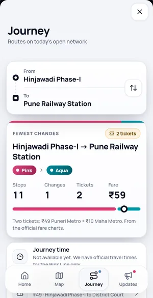

Plan a Pune Metro journey
Choose two stations for the route with the fewest changes, the official fare and an estimated time. Share the link to send the trip to someone.
How the planner works
Fewest changes first
The planner picks the route with the fewest changes, then the fewest stations, the same way the app does.
Official fares
Fares come straight from Maha Metro's and Puneri Metro's published charts. Trips that use both operators add the two fares.
Time is an estimate
Time on the train is our estimate from station distances and the Pink Line's published end-to-end time, not an official figure.
No live data
Neither operator publishes live train positions or delays, so nothing here is real-time. Check the station for disruptions.
Popular routes
- Swargate – PCMC ₹30
- Pune Railway Station – PCMC ₹30
- Ramwadi – Vanaz ₹30
- Swargate – Ramwadi ₹25
- Hinjawadi Phase-I – District Court ₹49
- Pune Railway Station – Swargate ₹20
- Hinjawadi Phase-I – Pune Railway Station ₹59
- Swargate – Deccan Gymkhana ₹20
- Swargate – Shivaji Nagar ₹20
- Swargate – Kalyani Nagar ₹25
- Ramwadi – Hinjawadi Phase-I ₹74
- Vanaz – Pune Railway Station ₹25
- Ramwadi – Mahatma Phule Mandai ₹25
- Swargate – Nashik Phata (Bhosari) ₹30
 Pune Metro Guide app · free on Android and iPhone
Pune Metro Guide app · free on Android and iPhone
Take your journey planning with you.
Plan any trip on your phone, even without a connection: the route, where to change, the official fare and a reminder before the last train.
- Official fares
- Last-train reminder
- Works offline

What's in the app · Unofficial, like this website.
